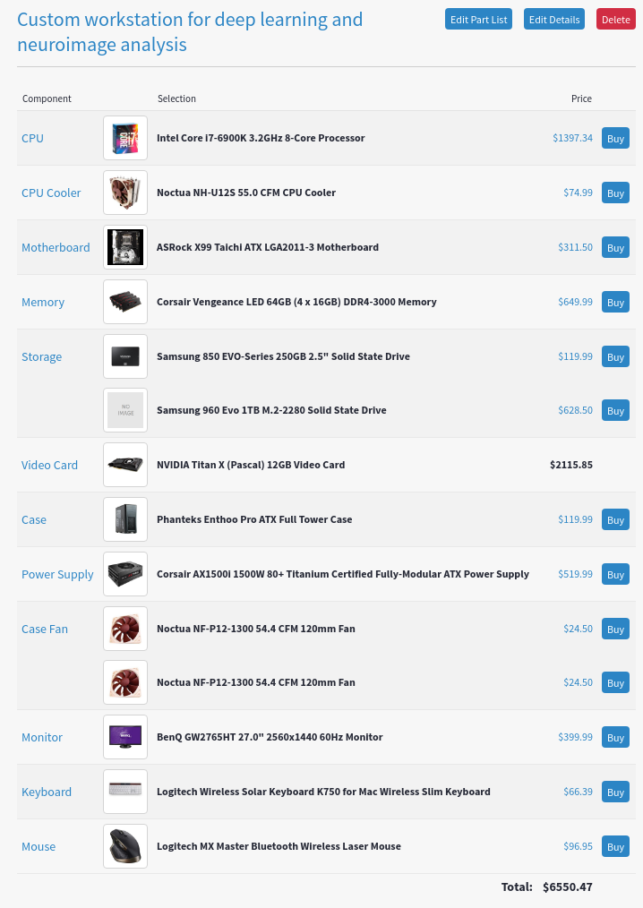

Last weekend I built a computer. This machine was designed as a workstation for my research, considering the resources needed for the analysis and modelling of large 7T fMRI data and the training/testing of deep neural networks. I used PCPartPicker to help me test out different configurations and check for compatibility issues. Here is the parts list:


I had never assembled a computer before so I asked my friend Joe Thibodeau to come over to supervise. Working together, the assembly was actually relatively painless (Thanks Joe!).


Notes:
- Since I’m not using them right now, we removed both of the HDD cages for better airflow. The front 200mm fan that came with the case now has clear access to the GPU.
- The 250GB Samsung 850 EVO slips into a removeable SSD bracket behind the motherboard
- The 1TB Samsung 960 EVO is an nvme ssd with m.2 connector and so plugs right into the motherboard. There is actually a 2nd m.2 slot on the motherboad for further expansion.
- In addition to the two fans that came with the case, I added two 120mm fans on the top panel for outtake. So air comes in through the front and out and up through the back and top, creating good airflow over the GPU and CPU and a slight negative pressure inside the case (which I heard is good?).
Looking forward
I will need considerably more storage but I can start with this for now and wait for the price of high-capacity SSDs to go down even more. I’d like to take advantage of the 2nd m.2 port on the motherboard and put at least another 1TB there, perhaps in some convenient configuration with the one I already have so that I can access them as one device. There is also a spot for another SSD bracket behind the motherboard.
I would consider getting another GPU just to run the graphics, reserving the Pascal Titan X as just a GPGPU. But I will wait to see how it goes.
I’ll post some benchmark results later. But with 8-cores (16 threads) @ 3.2 GHz, 64GB of RAM, 12GB of VRAM, and 3584 CUDA cores…fun times ahead!